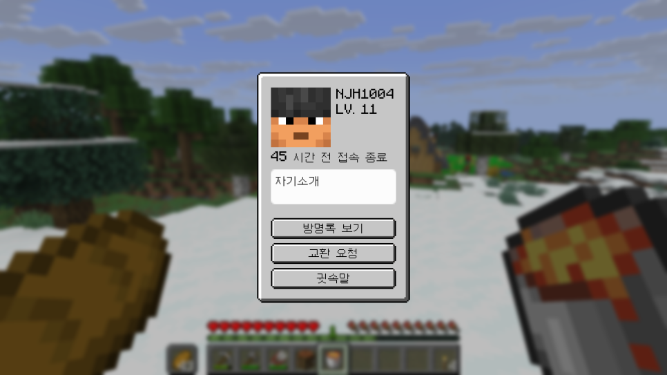
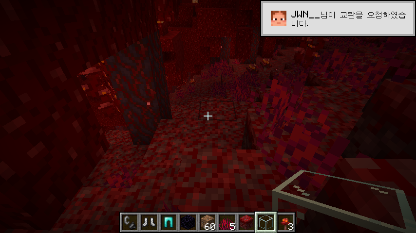

JWN's Profile Mod
개요
개인 프로필을 추가하는 모드.
버전 정보
- NeoForge 전용
- 마인크래프트 버전: 1.21.10 (NeoForge 버전 21.10.63 이상)
상세
* 2025. 12. 27. Last Updated개인 프로필
인게임 명령어 /profile <플레이어 이름>을 통해 플레이어의 프로필을 확인할 수 있습니다.

프로필에서는 다음과 같은 내용을 확인할 수 있습니다.
- 플레이어 이름
- 레벨
- 마지막 접속 시간
- 자기소개
또한 다음 기능을 사용할 수 있습니다.
방명록 보기
플레이어의 방명록을 확인할 수 있습니다.
방명록에 기록을 남기면 방명록을 확인하는 다른 모든 플레이어가 해당 내용을 확인할 수 있습니다.
교환 요청
플레이어에게 교환을 요청합니다.
상대방 플레이어가 1분 이내에 교환을 수락하지 않으면 교환이 취소됩니다.
교환 기능은 아래에서 더 자세히 설명합니다.
귓속말
귓속말 버튼을 누르면 채팅창에 /tell <플레이어 이름>이 입력됩니다.
이 인게임 명령어를 이용하면 해당 플레이어에게만 보이는 채팅을 보낼 수 있습니다.
교환 기능
프로필의 교환 신청 버튼을 누르면 해당 플레이어에게 교환을 신청할 수 있습니다.  누군가가 교환을 요청하면 toast 알림창을 통해 교환 요청 사실을 확인할 수 있습니다. 교환을 받은 플레이어가 1분 이내에 교환을 수락하지 않으면 교환은 자동으로 취소됩니다. 아래 명령어를 통해 교환을 수락하거나 거절할 수 있습니다.
/trade accept <플레이어 이름>/trade reject <플레이어 이름>
버전 기록
0.0.1
- 기본 기능 구현 완료
0.0.2
- 거래 기능 구현 완료
0.0.3
- 거래 매커니즘 변경: 거래창에 아이템을 넣으면 다시 뺄 수 없음
0.0.4
- 거래 매커니즘 변경: 근처에 몬스터가 있으면 거래할 수 없음
- 네더 또는 엔더에서 프로필을 열려고 시도하면 오류가 발생하면서 강제로 게임에서 나가지는 버그 수정
- 거래중이던 플레이어가 게임을 강제로 종료하는 등 거래가 중단되어야 하는 상황에서 거래가 정상적으로 중단되지 않는 버그 수정
- 프로필에서 미접속 중인 플레이어 얼굴이 나오지 않는 버그 수정
- 자기소개 수정 시 기존 자기소개 내용을 기본값으로 두도록 변경
- 플레이어 이름을 입력해야 하는 명령어에 (미접속 플레이어를 포함하여) 이름을 자동완성할 수 있도록 기능 추가
0.0.5
- 방명록 기능 대신, 쪽지 보내기 기능으로 변경 예정
- 거래 수락/거절 명령어에 플레이어 이름을 입력하지 않아도 되도록 변경 예정
자료실
jwnsprofilemod-0.0.4 jwnsprofilemod-0.0.4 * Click to download또는 git clone 이후 직접 ./gradlew build해도 됨